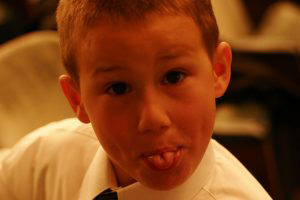
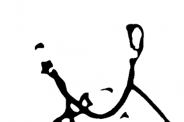
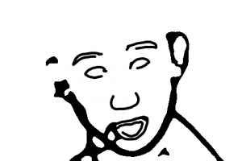
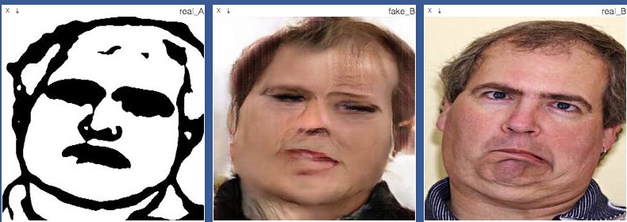

Confronted

Confronted was interactive VR experiance created as a collaboration with Char Stiles and Zaria Howard
This project worked by having the viewer sit in a chair with a VR headset and controllers. At first all they see is an empty space and a blank canvas on which they are instructed to draw a face. Once they are finished, their outline is fed through sketch2face and rendered into a fleshed out face which the viewer then sees manifest infront of them, face to face.
Gifs showing other renders


sketch2face using a face to generate lines



sketch2face using lines to generate a face
